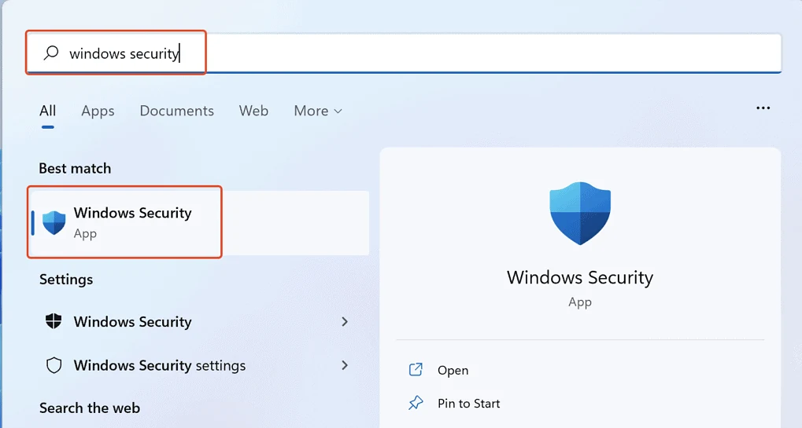
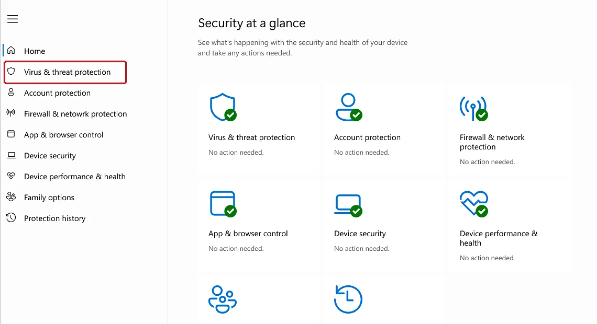

PHINIX / USER GUIDE
Microsoft Defender Antivirus
A visual guide to checking, updating, and scanning antivirus in Windows 11.
01
Open Windows Security
Search for Windows Security in the Start menu and open the app.

02
Open antivirus protection
On the home page, select Virus & threat protection.
